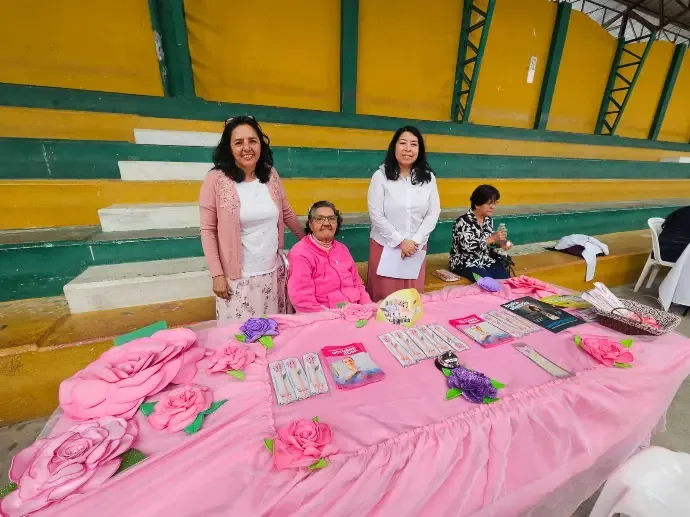
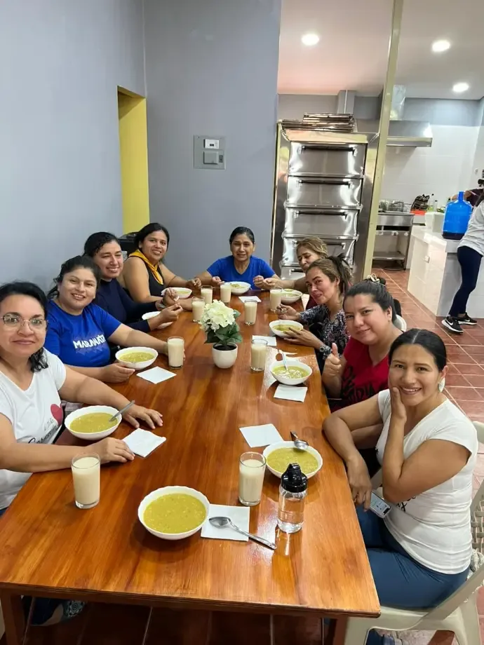

{{ t.heroEyebrow }}
{{ t.heroTitle }}
{{ t.heroSub }}
~30
{{ t.stat1 }}
9–12 Oct
{{ t.stat2 }}
3
{{ t.stat3 }}
1
{{ t.s1title }}
{{ t.s1text }}


2
{{ t.s2title }}
{{ t.s2text }}
{{ t.s2text2 }}




3
{{ t.s3title }}
{{ t.s3text }}
{{ t.s3text2 }}


